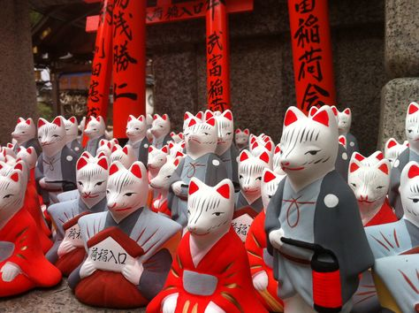
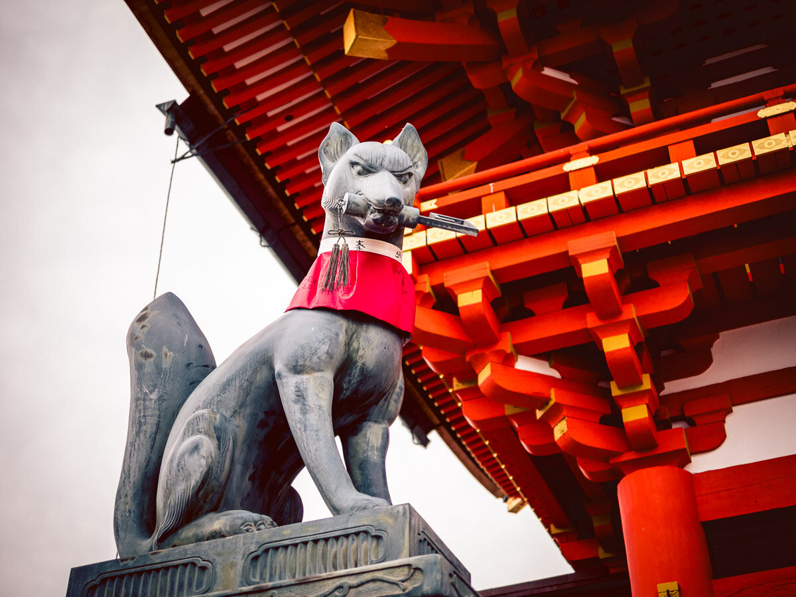

Кицунэ
Если вы в Японии вдруг встретите обворожительную девушку в Японии, которая с вами будет очень открыта и кокетлива, не спешите. Возможно данная особа является кицунэ(или же лисица-оборотень). Лисы (яп. кицунэ) - одни из самых известных духов животных в современной Японии. Чаще всего их изображают так, как на изображении сверху. Для рыжей лисицы (Vulpes vulpes) Япония является привычной средой обитания, как и большая часть Северного полушария.
Лисы - скрытные охотники, которых редко можно увидеть, даже если они живут поблизости с вами. Эти качества обыгрываются в фольклоре. В Японии лис считают оборотнями. Они могут принимать множество форм, отличных от их реальной внешности, чаще всего превращаясь в красивых женщин, пожилых мужчин или маленьких детей без указания пола.
Кицунэ в человеческом обличье пытаются обмануть людей или иным образом воспользоваться их благими намерениями.
Их методы могут варьироваться от простых схем, таких как перевоплощение в бедного попрошайку для кражи еды или денег, до гораздо более сложных и опасных заговоров. Кицунэ могут соблазнять людей и заманивать их в свои норы, которые кажутся жертвам прекрасными дворцами. Находясь под чарами лисы, несчастная жертва медленно отдает жизненную энергию. Без стороннего вмешательства смерть практически неизбежна..
Инари
Инари — это японский духи, божества процветания, чая, сельского хозяйства (особенно риса), промышленности и кузнечного дела. Они тоже представлены в облике лис(и таковыми являются). Они могут упоминаться как мужское, женское и андрогинное существо, в зависимости от контекста. Хотя роль богини процветания со временем изменилась, они были популярны по всей Японии более тысячи лет. Инари считается доброжелательной, только полезные кицунэ считаются ее истинными слугами, и они действуют как посланники и защитники. Нанести вред одной из этих лисиц — оскорбление для божества. Многие святыни, посвященные ей, имеют статуи лисиц у ворот

